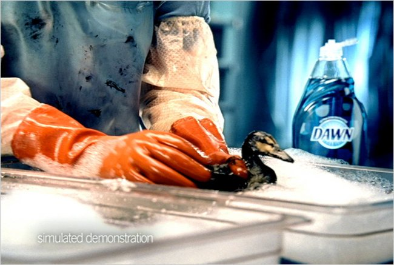

Water Pollution

Background Information:
Most animals and humans are affected
Drinking water is becoming polluted
1.3 gallons of oil each year
Dilution is not the solution
3.6 million people die to dirty water
Over 1 million sea birds die each year

What is being done:
People Voulenteer
2015, Santa Barbra
World Banks provides $8.3 billion
The group Generosity completed 795 water projects
Dawn soap helps with oil spill clean up for animal rescue
Oceana, largest international ocean censervation organization
There is a lot of help out there, but it is not enough
